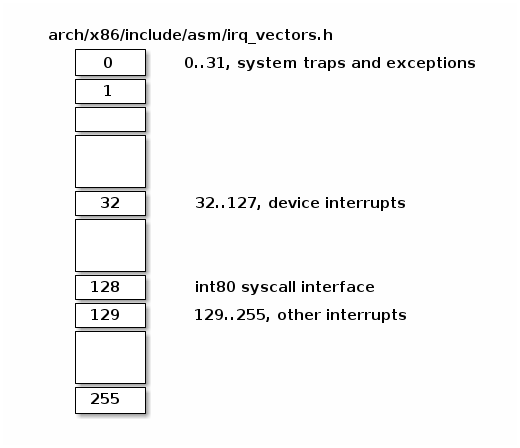

中断¶
课堂目标¶
- 中断和异常（x86）
- 中断和异常（Linux）
- 可延迟的工作
- 定时器
什么是中断？¶
中断是一种特殊的事件，它会打断程序的正常执行流程。中断可以由硬件设备甚至 CPU 自身触发。当发生中断时，当前程序的执行流程被暂停，然后运行中断处理程序。中断处理程序运行完毕后，之前程序的执行流程会被恢复。
根据其来源，中断可以分为两类。根据是否可以推迟或临时禁用中断，中断也可以分为另外两类：
- 同步中断，由执行指令触发
- 异步中断，由外部事件触发
- 可屏蔽（maskable）中断
- 可以被忽略
- 通过 INT 引脚（pin）发出信号
- 非可屏蔽中断
- 无法被忽略
- 通过 NMI 引脚发出信号
同步中断通常被称为异常（exceptions），用于处理处理器在执行指令过程中检测到的条件。除以零和系统调用都是异常的例子。
异步中断通常被称为中断，是由输入/输出设备产生的外部事件。例如，网络卡会触发中断来通知有一个数据包到达。
可屏蔽中断占了中断的大多数，它们允许我们暂时禁用中断，推迟中断处理程序的运行，直到我们重新开启中断。但是，也有一些重要的中断是不能被禁用或推迟的。
异常¶
异常有两种来源：
- 处理器检测到的异常
- 故障（falut）
- 陷阱（trap）
- 中止（abort）
- 程序编程
- int n
当执行指令时，如果检测到异常情况，就会引发处理器检测到的异常。
故障是一种在指令执行之前报告的异常。故障通常可以被修正。保存的 EIP 是导致故障的指令的地址，因此在故障修正后，程序可以重新执行有问题的指令（例如页面故障）。
陷阱是一种特殊类型的异常，它在计算机执行了产生异常的指令之后才被报告出来。所保存的 EIP（即指令指针寄存器）是引发陷阱的那条指令之后的那条指令的地址。举个例子，调试陷阱就是这样一种情况。
硬件概念¶
可编程中断控制器¶

支持中断的设备具有用于发出中断请求（Interrupt ReQuest）的输出引脚。IRQ 引脚连接到名为可编程中断控制器（PIC）的设备上，而 PIC 则连接到 CPU 的 INTR 引脚。
PIC 通常配备了一组端口，用于与 CPU 进行信息交换。当某一个连接到 PIC 的 IRQ 引脚所属的设备需要引起 CPU 的注意时，会启动以下流程：
- 设备在相应的 IRQn 引脚上触发中断
- PIC 将 IRQ 转换为向量号（vector number），并将其写入 CPU 读取的端口
- PIC 在 CPU INTR 引脚上触发中断
- PIC 在触发另一个中断之前应等待 CPU 确认此中断
- CPU 确认中断后，开始处理中断
稍后将了解 CPU 如何处理中断。请注意，按设计，PIC在CPU确认当前中断之前不会触发另一个中断。
Note
CPU 在确认中断后，不管之前的中断是否处理完毕，中断控制器都能发出新的中断请求。因此，根据操作系统如何控制 CPU，可能会出现嵌套中断的情况。
中断控制器允许单独禁用某个 IRQ 线。这简化了设计，确保中断处理程序始终按顺序执行。
在 SMP 系统中的中断控制器¶
在 SMP 系统中，可能会有多个中断控制器存在。
例如，在 x86 架构中，每个核心（core）都有一个本地 APIC 用于处理来自本地连接设备（如定时器或温度传感器）的中断。此外，还有一个 I/O APIC 用于将来自外部设备的中断请求分发给 CPU 核心。
中断控制¶
为了在中断处理程序和其他可能的并发活动（如驱动程序初始化或驱动程序数据处理）之间同步对共享数据的访问，通常需要以受控的方式启用和禁用中断。
这可以在几个级别上实现：
- 在设备级别
- 通过编程设备控制寄存器
- 在 PIC（可编程中断控制器）级别
- 可以通过编程 PIC，来禁用给定的 IRQ（中断请求）线路
- 在 CPU 级别；例如，在 x86 架构上可以使用以下指令：
- cli（清除中断标志）
- sti（设置中断标志）
中断优先级¶
大多数体系结构还支持中断优先级。启用中断优先级机制后，只有比当前优先级高的中断才允许嵌套当前中断。
中断优先级并不是所有架构都支持的功能。对于通用的操作系统来说，要设计一个通用的中断优先级方案非常困难，所以一些内核（比如 Linux）就没有采用中断优先级。但是，大多数实时操作系统（RTOS）都使用了中断优先级，因为它们的应用场景更加有限，中断优先级的定义也更加简单。
测验：硬件概念¶
下列哪些陈述是正确的？
- 当前中断完成前，CPU 可以开始处理新的中断
- 可以在设备级别上禁用中断
- 低优先级中断不能抢占高优先级中断的处理程序
- 可以在中断控制器级别上禁用中断
- 在 SMP 系统中，相同的中断可以路由到不同的 CPU
- 可以在 CPU 级别上禁用中断
x86 架构上的中断处理¶
本节将介绍 x86 架构上，CPU 如何处理中断。
中断描述符表¶
中断描述符表（IDT）将每个中断或异常标识符与处理相关事件的指令的描述符关联起来。我们将标识符称为向量号，并将相关指令称为中断/异常处理程序。
IDT 具有以下特点：
- 当触发给定向量时，CPU 将中断描述符表用作跳转表
- 它是由 256 个 8 字节条目组成的数组
- 可以位于物理内存中的任何位置
- 处理器通过 IDTR 来定位 IDT
下面是 Linux IRQ 向量布局。前 32 个条目保留用于异常，向量号 128 用于系统调用接口，其余大多用于硬件中断处理程序。

在 x86 架构中，每个 IDT 条目占据 8 个字节，被称为“门（gate）”。IDT 条目可以分为三种类型的门：
- 中断门（Interrupt Gate）：保存中断或异常处理程序的地址。跳转到处理程序时，会禁用可屏蔽中断（IF 标志被清除）
- 陷阱门（Trap Gate）：与中断门类似，但在跳转到中断/异常处理程序时不会禁用可屏蔽中断
- 任务门（Task Gate）：Linux 中不使用
让我们看一下 IDT 条目的几个字段：
- 段选择符（Segment Selector）：用于索引全局描述符表（GDT）或者本地描述符表（LDT），以找到中断处理程序所在的代码段的起始位置
- 偏移量（Offset）：代码段内的偏移量
- T：表示门的类型
- DPL：使用段内容所需的最低特权级

中断处理程序地址¶
要找到中断处理程序的地址，我们首先需要确定中断处理程序所在代码段的起始地址。我们可以通过使用段选择符来索引 GDT/LDT，以找到对应的段描述符。段描述符会提供存储在“base”字段中的起始地址。现在，结合基地址和偏移量，我们就可以定位到中断处理程序的起始位置。

中断处理程序的栈¶
与控制转移到普通函数类似，控制转移到中断或异常处理程序也使用栈来存储返回到被中断代码所需的信息。
如下图所示，中断在保存被中断指令的地址之前，会将 EFLAGS 寄存器压入栈中。某些类型的异常还会在栈上压入产生错误的代码，以帮助调试异常。

处理中断请求¶
在生成中断请求后，处理器会运行一系列事件，最终执行内核中断处理程序：
处理中断请求的步骤如下：
CPU 检查当前特权级别
如果需要更改特权级别
- 使用与新特权级别相关联的堆栈
- 在新堆栈上保存旧堆栈信息
在堆栈上保存 EFLAGS，CS，EIP
在发生程序中止时，在堆栈上保存错误代码
执行内核中断处理程序
从中断处理程序返回¶
大多数体系架构都提供了特殊的指令，用来在执行中断处理程序后清理堆栈并恢复被中断程序执行。在 x86 架构中，使用 IRET 指令从中断处理程序返回。IRET 类似于 RET 指令，但 IRET 会将 ESP 增加额外的四个字节（因为堆栈上有标志位），并将保存的标志位移动到 EFLAGS 寄存器。
在中断处理程序执行后恢复执行的过程如下（x86 架构）：
- 弹出错误代码（如果发生中止）
- 调用 IRET 指令
- 从堆栈弹出值并恢复以下寄存器的值：CS，EIP，EFLAGS
- 如果特权级别发生了更改，则返回到旧堆栈和旧特权级别
测验：x86 中断处理¶
下面的 gdb 命令用于确定基于 int80 的系统调用异常的处理程序。请正确顺序以下命令以及命令的输出。
(void *) 0xc15de780 <entry_SYSENTER_32>
set $idtr_addr=($idtr_entry>>48<<16)|($idtr_entry&0xffff)
print (void*)$idtr_addr
set $idtr = 0xff800000
(void *) 0xc15de874 <entry_INT80_32>
set $idtr = 0xff801000
set $idtr_entry = *(uint64_t*)($idtr + 8 * 128)
monitor info registers